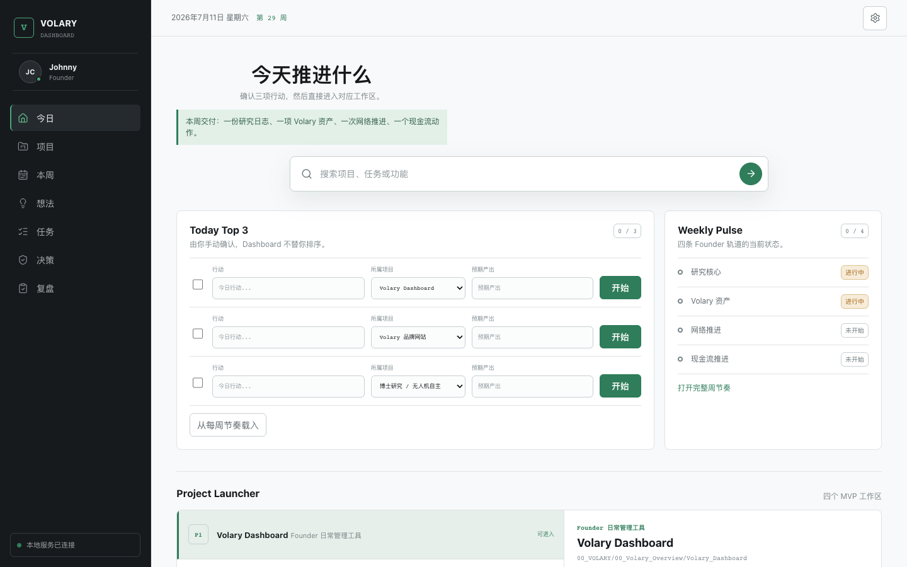

Dashboard system
Personal Dashboard
A Volary dashboard homepage for founder-side planning, weekly rhythm, task entry, and project launch.
StackHTML, CSS, JavaScript, local dashboard UI
RoleDesigned the homepage structure, navigation, daily task module, weekly pulse, and launcher layout.